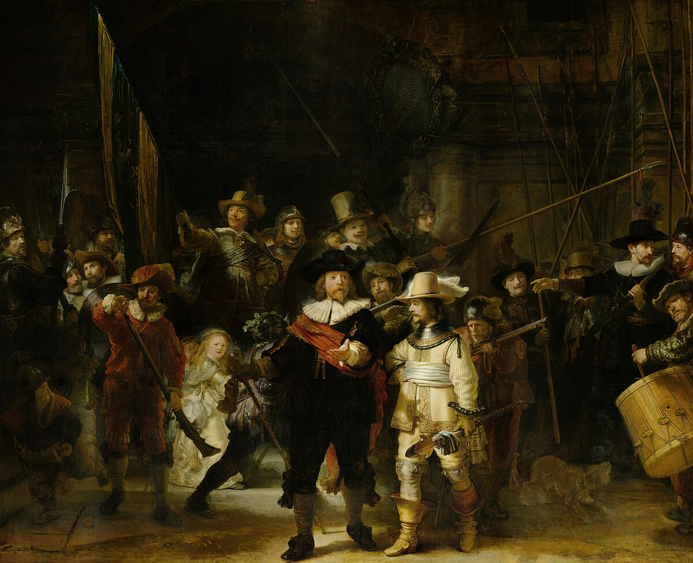

Адреса музею: Паулюс Поттерстраат, 13 1071 DJ Амстердам, Нідерланди
Час роботи: Вівторок-неділя: 10:00 - 18:00
Художній музей у місті Амстердамі. Містить значне зібрання творів нідерландського, французького і сучасного світового образотворчого мистецтва.
Офіційний сайт
Колекції музею
| Нічний дозор | Молочниця | Вавилонська вежа | Спляча Венера |
|---|---|---|---|
|  | |||
| фото 1 | фото 2 | фото 3 | фото 4 |
| Груповий портрет загону стрільців Амстердама | Ця картина голландського майстра відома своїм використанням світла та композиції. | Ця картина зображує біблійну історію про будівництво Вавилонської вежі. | Ця картина зображує римську богиню Венеру, яка спить. |